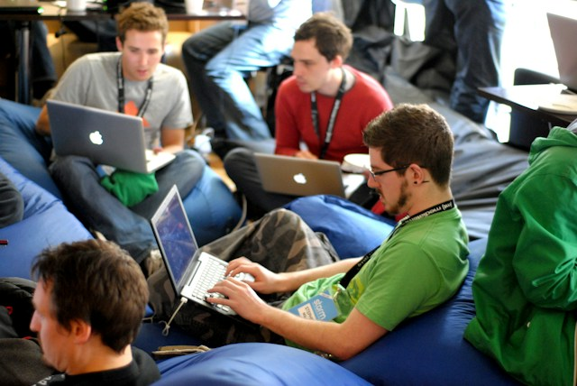
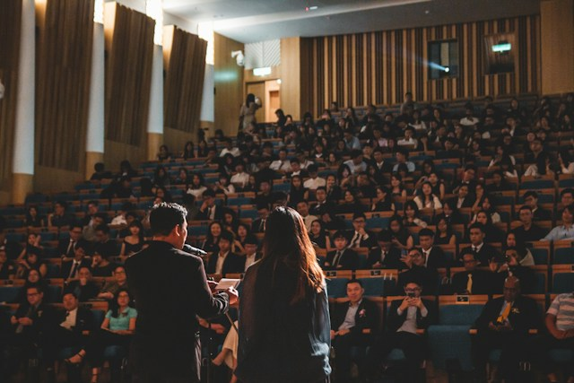

Our Journey
Welcome to our student club! Over the past four years, we have been dedicated to providing valuable opportunities and making a positive impact in our community. Here are some highlights of our journey:
Recruitment Drive:
Before the official opening, The Best Minds Society kicked off with a dynamic recruitment drive. Members actively reached out to fellow students, showcasing the club's vision and mission, and encouraging individuals to join the community.
Skill Workshops:
Recognizing the importance of skill development, the club organized several workshops focusing on a range of topics, from public speaking and leadership skills to technical proficiency. These workshops not only honed members' abilities but also created a supportive learning environment.
Social Events:
The club organized social events to foster a sense of community and friendship. From icebreaker sessions to casual meet-and-greets, these events provided a platform for members to connect on a personal level, laying the groundwork for effective collaboration.
Logo and Branding Design Contest:
In preparation for the official launch, The Best Minds Society held a logo and branding design contest. This initiative not only engaged the artistic talents within the club but also created a visual identity that reflected the dynamic and innovative nature of the society.
Club Website Development:
As a tech-savvy community, the club worked on developing a sleek and informative website. This platform would serve as a hub for members to access resources, stay updated on events, and showcase the incredible work and achievements of the society.
Community Involvement
SDigital Outreach:
Use social media and other online platforms to raise awareness about community issues, share resources, and connect with a wider audience.
Create online forums or groups to facilitate community discussions and support networks..
Achievements:
Secured medals and prizes in various inter-school or inter-collegiate competitions.
Demonstrated excellence in [specific activity or discipline], earning recognition for outstanding achievements.
Showcased talents through performances, exhibitions, or projects, gaining accolades.
Recognition by the Main Community:
Acknowledged and recognized by the main community for contributing positively to the academic and social atmosphere.
Received commendations for the club's commitment to excellence and its impact on the broader student body.
Collaborated with other clubs and organizations, establishing a network within the community.
Club Culture and Values
Emphasizes a culture of inclusivity, encouraging participation from students with diverse backgrounds and interests.
Values innovation, creativity, and continuous improvement, reflecting a commitment to personal and collective growth.
Collaborative Project Planning:
To build camaraderie among members, collaborative project planning sessions were held. Members had the opportunity to propose and plan various projects, ensuring that everyone had a chance to contribute their strengths and interests to the club overall objectives.
take a look

Inaugural Brainstorming Session:
The club hosted an initial brainstorming session to gather ideas for future activities, events, and projects. This session allowed members to contribute their unique perspectives, setting the foundation for the club's dynamic and inclusive culture.
Social Events:
The club organized social events to foster a sense of community and friendship. From icebreaker sessions to casual meet-and-greets, these events provided a platform for members to connect on a personal level, laying the groundwork for effective collaboration.
Pre-Launch Teasers:
To generate excitement and curiosity, the club strategically released pre-launch teasers on social media platforms, giving a sneak peek into the upcoming activities and initiatives. This helped build anticipation and attract attention from potential members.
